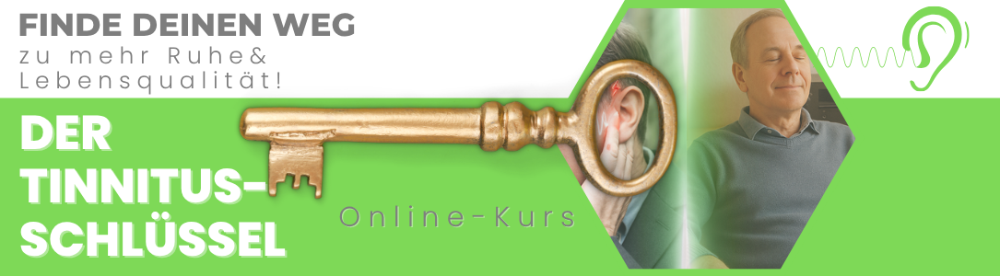

Schön, dass du hier bist.
Ein 8-Wochen-Programm mit Live-Begleitung (online), in dem du deinen Tinnitus und seine Zusammenhänge verstehst. Du lernst, wie du selbst darauf einwirken kannst, und bekommst konkrete Übungen für deinen Alltag.
Boris und Katharina stellen dir das Programm vor · 6 Minuten
Dieses 8-Wochen-Programm läuft mit Live-Begleitung. Du bist nicht allein mit Videos, sondern jede Woche mit uns beiden zusammen in einer kleinen Gruppe.
Wir geben weiter, was wir in vielen Jahren in der Praxis über Tinnitus gelernt haben. Du bekommst Wissen, Übungen für zu Hause und die Möglichkeit, deine Fragen direkt zu stellen.
Diese erste Gruppe ist die Pilotgruppe des Tinnitus-Schlüssels. Hier bekommst du das gesammelte Praxiswissen von zwei Tinnitus-Experten, und die einmalige Gelegenheit, von Anfang an dabei zu sein, zum vergünstigten Pilotpreis.
Start ist am Donnerstag, 1. Oktober um 19 Uhr. Danach treffen wir uns acht Donnerstagabende lang, jeweils von 19 bis 21 Uhr.
Wir starten damit, dass du deinen Standort bestimmst: Wo stehst du gerade, und was ist bei dir die wichtigste Baustelle? Von dort aus nähern wir uns Schritt für Schritt den verschiedenen Seiten des Tinnitus.
Es geht um das Innenohr, um seine Regeneration und darum, deine Hörkurve zu verstehen. Du erforschst deine Hörkonflikte mithilfe deiner eigenen Lebenslinie und lernst, welche Rolle das Nervensystem dabei spielt und wie du es beruhigen kannst. Beim Hörtraining übst du, wie dein Gehör Geräusche wieder besser einordnen kann. Dazu kommen ganz praktische Themen wie Schlaf und Nahrungsergänzung.
Am Ende führen wir alles zusammen: zu einer Routine, die zu dir passt, und zu einem sicheren Umgang mit guten wie mit schlechten Tagen.
Die genaue Reihenfolge der Abende stimmen wir gemeinsam mit der Gruppe ab, damit wir dort vertiefen können, wo bei euch der größte Bedarf ist.
Kein Problem. Wir zeichnen jeden Abend auf und hinterlegen ihn in einem geschützten Videobereich. So kannst du eine Einheit, die du verpasst hast, in Ruhe nachholen und bleibst trotzdem in der Gruppe dabei.
Heilpraktiker mit Schwerpunkt Tinnitus, seit vielen Jahren in eigener Praxis in Ahrensburg. Kennt Tinnitus auch von der anderen Seite: aus eigener Erfahrung.
Arbeitet mit Konflikt- und Traumatherapie und geht auf Nervensystem, Stress und Hörkonflikte ein, die beim Tinnitus oftmals mitspielen.
Nur 10 Plätze
Sichere Abwicklung über Digistore24. Nach dem Kauf melden wir uns bei dir mit allen weiteren Schritten.
Wir freuen uns darauf, dich in den kommenden Wochen persönlich zu begleiten.
Boris & Katharina
Zur Einordnung: Der Tinnitus-Schlüssel vermittelt Wissen und zeigt dir Übungen, die du eigenverantwortlich anwendest. Er ersetzt keine ärztliche Untersuchung, und wir stellen keine Diagnosen.
Bitte lass deine Beschwerden ärztlich abklären, bevor du mit den Übungen beginnst. Das gilt besonders bei plötzlichem Hörverlust, Schwindel oder einem Geräusch im Takt deines Herzschlags.
Wie Menschen auf die Inhalte reagieren, ist unterschiedlich. Ein bestimmtes Ergebnis können wir dir nicht versprechen.